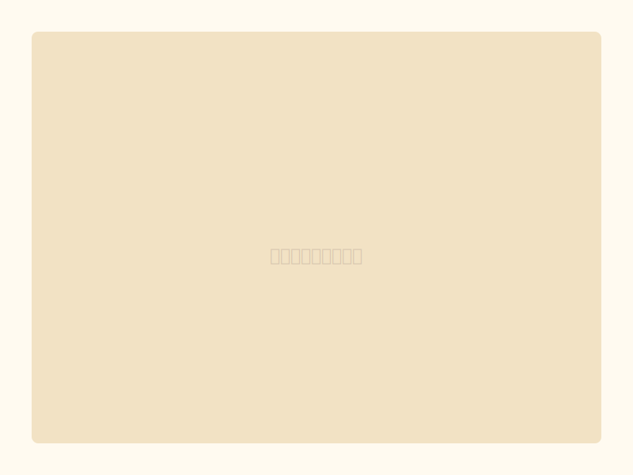

ポストのシール（1枚）
¥300
懐かしのポストをモチーフにした、大判ステッカー。街角の風景にこっと貼って、まちを彩ります。
商品説明
まちの風景になじむポストのシールです。ステッカーなので、好きな場所に貼ることができます（貼る場所は適切に選んでください）。懐かしさと親しみやすさを持つデザインは、どんなシーンでも活躍します。
素材 / 仕様
- 素材：ビニール防水ステッカー
- サイズ：約W8cm × H12cm
- 枚数：1枚
- 防水処理：あり
¥300
懐かしのポストをモチーフにした、大判ステッカー。街角の風景にこっと貼って、まちを彩ります。
まちの風景になじむポストのシールです。ステッカーなので、好きな場所に貼ることができます（貼る場所は適切に選んでください）。懐かしさと親しみやすさを持つデザインは、どんなシーンでも活躍します。